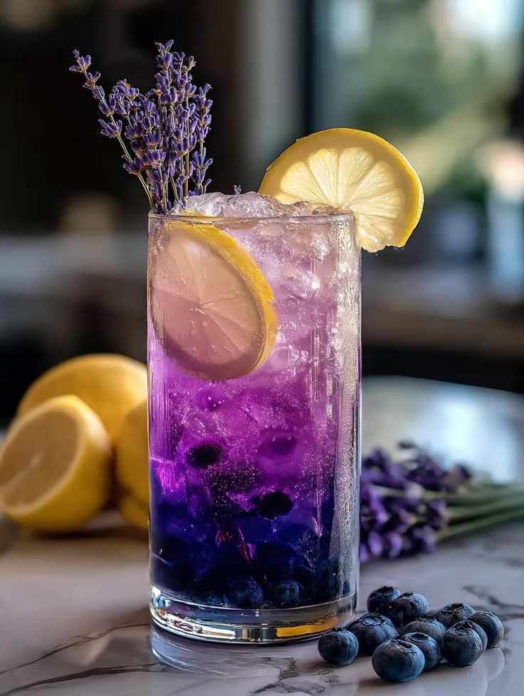

Cocktails
Hier vind je mijn favoriete coctails om te maken
Cocktails zijn drankjes die gemaakt worden door verschillende ingrediënten te mengen. Meestal bevatten ze alcohol, zoals rum, vodka of gin, maar er bestaan ook alcoholvrije cocktails. In een cocktail zitten vaak fruitsap, frisdrank, siroop en ijs. Ze worden gemaakt door de ingrediënten te shaken, roeren of blenden. Cocktails worden over de hele wereld in bars en restaurants gedronken. 🍹


_______________________________________________________
Mocktails
Hier vind je mijn favoriete mocktails om te maken
Mocktails zijn alcoholvrije drankjes die vaak worden gemaakt door verschillende ingrediënten te mengen, zoals fruitsap, frisdrank, siroop en ijs. Ze worden gemaakt door de ingrediënten te shaken, roeren of blenden. Mocktails zijn een populaire keuze voor mensen die geen alcohol drinken, maar toch willen genieten van een lekker drankje. Ze worden vaak geserveerd op feestjes, evenementen en in restaurants. 🍹


